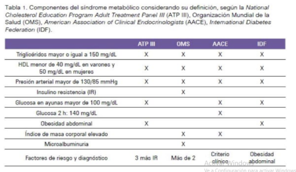

1Definicion
Es un conjunto de anormalidades metabólicas consideradas como un factor de riesgo para desarrollar enfermedades cardiovasculares y diabetes. La fisiología que presentan las personas con SM Son : La resistencia a insulina ha sido considerada como base del desarrollo del conjunto de anormalidades que lo conforman, sugiriendo a la obesidad abdominal o central como responsable del desarrollo de la insulino resistencia. El síndrome metabólico ha sido considerado un equivalente diagnóstico de prediabetes, por ser predictor de diabetes. El incremento en la prevalencia del SM a nivel mundial le ha otorgado una gran importancia en la prevención y control de riesgo de la enfermedad cardiovascular y la diabetes. En el presente artículo revisaremos importantes aspectos sobre la definición y diagnóstico del síndrome metabólico.
2Conjunto de sintomas
● insulinorresistencia ● presión arterial alterada ● glicemia en ayunas alterada ● triglicéridos alterados ● HDL : Disminución del colesterol bueno ● LDL : aumento de colesterol malo ● aumento del perímetro abdominal ( Aumento de grasa visceral )
Criterios para Diagnostico
para la evaluación del Síndrome Metabólico hay diferentes organizaciones con diferentes criterios el cual nos ayudan a determinar si un paciente tiene SM
La obesidad abdominal, que implica el aumento y acúmulo de grasa a nivel visceral (depósito de tejido graso principalmente en hígado, músculo y páncreas), tendría la mayor implicancia en el desarrollo del síndrome. Esta grasa visceral implica la formación en el tejido graso de sustancias químicas llamadas adipoquinas, que favorecen estados proinflamatorios y protrombóticos, que a su vez van a conducir o contribuir al desarrollo de insulinorresistencia, hiperinsulinemia, alteración en la fibrinólisis y disfunción endotelial.
Las siguientes son sugerencias para una buena evaluación:
● Evaluación del perímetro abdominal: debe realizarse con el paciente en posición de pie al final de una espiración normal, con los brazos relajados a cada lado. La medida debe tomarse a la altura de la línea media axilar, en el punto imaginario que se encuentra entre la parte inferior de la última costilla y el punto más alto de la cresta ilíaca (principal punto de referencia).
● Determinación de glucemia en ayunas: debe realizarse con por lo menos ocho horas previas de ayuno y en las primeras horas de la mañana, pues sabemos que fisiológicamente nuestro organismo tendrá una respuesta hepática compensatoria si no ingerimos alimentos y la medición no será exacta. De igual forma, fisiológicamente tendremos una concentración de glucosa elevada para nuestra referencia si no guardamos el ayuno respectivo, mostrando los resultados valores posprandiales, para los cuales las referencias aceptadas son diferentes.
● Determinación de triglicéridos y de colesterol HDL: también debe realizarse con por lo menos ocho horas previas de ayuno y en las primeras horas de la mañana. La concentración de triglicéridos puede variar según lo descrito para glucosa, no así el valor de HDL. Sin embargo, se recomienda que la medición de ambos sea en ayunas.
● Medición de la presión arterial: debe realizarse cuando la persona esté descansada y tranquila. No debe tomarse después del ejercicio o si la persona se siente estresada. Recordemos que no estamos diagnosticando hipertensión arterial. Por tanto, nuestro objetivo debe ser claro respecto al valor de referencia (130/85 mmHg) para el diagnóstico de SM. La medición podemos realizarla usando un monitor digital para presión arterial o un esfigmomanómetro y estetoscopio. La medición va a ser correcta en ambos casos si realizamos el procedimiento de manera adecuada.